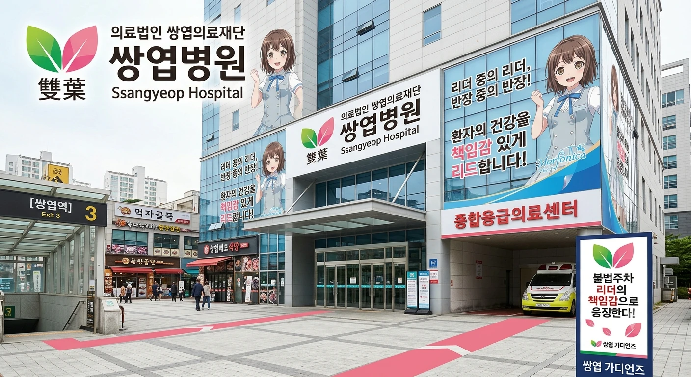

[쌍엽병원 전경]| 명칭 | 의료법인 쌍엽의료재단 쌍엽병원 |
|---|---|
| 개원 | 2009년 7월 4일 |
| 종별 | 종합병원 |
| 병원장 | 조진엽 (의학박사·외과 전문의) |
| 명예 병원장 | 후타바 츠쿠시 |
| 소재지 | 효빈광역시 창전구 쌍엽로 12 (쌍엽동, 쌍엽역 3번 출구 앞) |
| 병상 수 | 480병상 |
| 대표 전화 | 079-850-0915 |
| 웹사이트 | 쌍엽병원 공식 홈페이지 |
효빈광역시 창전구 동부의 대규모 신도시인 쌍엽지구 주민들의 안녕을 책임지는 지역 거점 종합병원.
2000년대 후반 쌍엽지구 신도시 개발이 완료되면서 급증한 주민들의 의료 수요를 분담하기 위해 설립되었다. 이웃 동네의 창전병원이 고소득층 위주의 프리미엄 멘탈 케어와 미용·건강검진에 집중한다면, 쌍엽병원은 서민 및 중산층 중심의 응급의료, 소아청소년과, 재활의학 등 실질적인 밀착형 거점 병원의 역할을 도맡아 하고 있다.
이곳 역시 창전구의 강력한 서브컬처 유니버스의 영향을 정면으로 받아, Morfonica의 드러머이자 2년 연속 반장인 후타바 츠쿠시 테마로 완벽하게 래핑되어 있는 전국 유일의 '리더십 특화 병원'이다.
과거 탄성군 시절 유류동과 팔조동에 끼여 숨도 못 쉬던 옛 유엽동 지역이 1989년 창전구 분구와 함께 쌍엽동으로 당당히 독립했다. 이후 2000년대 중반부터 대규모 주거 단지(쌍엽 푸르지오 등)가 들어서며 인구가 폭발하자, 종합병원의 부재가 심각한 문제로 떠올랐다.
이에 효빈시청의 부지 지원을 받아 2009년 7월 4일 최첨단 급성기 병동을 갖춘 '쌍엽병원'이 정식으로 문을 열었다. 개원 당일 "우리 손으로 만든 안전한 동네"를 슬로건으로 내걸며 주민 자치회인 '쌍엽 가디언즈'와 의료 협약을 체결, 동네 주민들의 끈끈한 사랑을 받는 병원으로 자리 잡았다.
지명인 '쌍엽(雙葉)'이 한자는 다르지만 독음과 의미(두 개의 잎사귀)가 후타바 츠쿠시(二葉 つくし)의 성씨와 완벽히 매칭되는 덕분에, 병원 전체가 츠쿠시의 '든든하면서도 커여운 허당 반장' 밈으로 가득 차 있다. 실제 병원장인 조진엽 박사는 자타공인 츠쿠시 오시(?)로 알려져 있다.
주민 자치회 '쌍엽 가디언즈'의 엄격한 관리를 받기 때문에 병원 내부가 먼지 하나 없이 칼같이 깨끗한 것이 특징이다.
쌍엽병원은 주민 자치 조직 '쌍엽 가디언즈'와의 끈끈한 연대 속에서 운영되며, 리더십과 헌신으로 무장한 정예 의료진이 상주하고 있다.
쌍엽동 신도시 먹자골목 한복판에 자리 잡고 있어 대중교통 접근성은 최상급이다.
쌍엽병원 앞 응급차 전용 진입로에 개념 없는 외부 차량이 불법 주차를 감행한 적이 있었다. 이를 본 주민 자치 조직 '쌍엽 가디언즈' 아줌마·아저씨들이 "우리 동네에선 리더의 책임감으로 응징한다!" 라며 순식간에 조끼를 입고 나타나, 차량 사방에 불법주차 경고 스티커를 츠쿠시 떡잎 모양으로 200장 넘게 도배해 버려 차주를 정신적으로 완벽히 참교육했다. 구청 견인차가 오기도 전에 자치회 선에서 상황 종료.
병원 지하 1층에 츠쿠시의 아버지가 운영하는 프랜차이즈 외식 브랜드 계열의 대형 푸드코트가 입점해 있다. 맛과 위생이 거의 재벌가 패밀리 레스토랑 수준이라, 병원 직원들뿐만 아니라 인근 쌍엽고등학교나 쌍엽여고 학생들이 학식을 버리고 대거 원정을 오는 기현상이 벌어지기도 한다. 점심시간만 되면 교복을 입은 학생들이 병원 식당가를 점령하여 "여기가 병원이냐 학원가 맛집이냐"는 소리가 절로 나온다.
매년 7월 4일(개원기념일)에는 내원하는 모든 환자에게 분홍색 '리더 밴드'를 증정하며, 9월 15일(명예 병원장 츠쿠시 생일)에는 소아과 병동 아이들에게 미니 드럼 스틱 모양의 귀여운 볼펜을 선물하는 훈훈한 전통이 이어지고 있다. 소아과 아이들이 볼펜으로 책상을 두드리며 병동 전체가 타악기 연주실로 변모하는 진풍경이 매년 9월마다 펼쳐진다.
창전구 갑에서 5.2%로 멸망한 극우 빌런 윤재훈이, 앙심을 품고 쌍엽역 3번 출구 먹자골목과 쌍엽병원 정문 사이에서 "창전구는 오타쿠 빨갱이 소굴이다! 계엄군을 투입하라!"며 확성기를 잡고 난동을 부린 적이 있다. 응급차 사이렌 소리보다 시끄러운 소음에 빡친 쌍엽 가디언즈 어머니들과 병원 보안요원들이 출동했다.
가디언즈 부회장인 박미정 수간호사는 윤재훈의 멱살을 잡는 대신, 영양관리과에서 츠쿠시 룰에 따라 환자식에서 걸러낸 데친 시금치와 생브로콜리 한 대야를 들고 나타났다. "우리 동네 환자들 쾌유를 방해하는 자는 비타민 폭탄을 맞아야 한다!"라며 윤재훈의 입에 브로콜리를 강제로 쑤셔 넣었고, 편식쟁이였던 윤재훈은 흙냄새 나는 브로콜리에 사레가 들려 눈물 콧물을 쏟으며 도망쳤다. 이후 에브리타임에는 '쌍엽병원 녹색 채소 퇴마 의식'이라는 짤방으로 박제되었다.
안천구 리에라몰의 장녀이자 유명 스트리머인 임은혜(은혜당)가 쌍엽병원 푸드코트의 카레가 그렇게 맛있다는 소문을 듣고, 삼각대와 카메라를 들고 지하 1층에 잠입해 먹방 라이브를 켰다. 은혜는 "여러분~ 오늘은 쌍엽동 명물 츠쿠시 카레 10그릇 푸파 갑니다 큥!"을 외치며 폭풍 흡입을 시작했다.
그런데 밥을 먹던 중 카레 그릇 귀퉁이에 장식용으로 얹혀 있던 파슬리 가루 한 톨을 발견한 임은혜는 눈이 튀어나오며 "잠깐 타임! 명예 병원장 츠쿠시 쨩의 법도에 따르면 녹색 채소는 사형감입니다 큥! 조리장님 나와주세요!"라며 억지 생떼를 부렸다. 이를 지켜보던 총괄 조리장이 다가와 "그건 녹색 채소가 아니라 파슬리 향신료입니다, 아가씨"라며 팩폭을 날리고 카레 3그릇을 서비스로 더 얹어주자, 은혜는 금세 헤벌쭉 웃으며 국물까지 싹싹 핥아먹고 식비 18만 원을 일시불로 긁었다.
효빈시의회 비례대표 노정미 시의원이 지역 공공의료 지원 예산 점검 차 쌍엽병원을 공식 방문했다. 임상심리사 자격증을 가진 노 의원은 조진엽 병원장과 가디언즈 임원들이 차려입은 단정한 분홍색 리더 가운을 보더니, 특유의 영적인 눈빛을 번뜩이며 타로 카드를 꺼내 들었다.
"어머나~ 조 원장님, 이마에 '내가 다 책임져야 해!'라는 장녀·반장 콤플렉스 오라가 한 바가지 쏟아져 내리고 있데이!"라며 팩트 폭행을 가했다. 조 원장이 "무, 무슨 소리십니까! 저는 철저한 의학적 리더십입니다!"라며 당황하자, 노정미는 "피로가 꽉 찬 반장님한테는 영치료가 특효약이제~"라며 양손을 들고 기습 와시와시를 시전하려 들었다. 하지만 그 순간, 등 뒤에서 나타난 쌍엽 가디언즈 어머니들이 "시의원님, 우리 원장님은 건드리면 안 됩니다!"라며 노정미의 양팔을 결박해 버려 시의회 역사상 최초의 '와시와시 미수 저지 사건'으로 기록되었다.
창전구 을 지역구의 4선 터줏대감이자 노동운동가 출신인 노상현 국회의원이 한밤중에 예고도 없이 쌍엽병원 응급실과 중환자실을 기습 방문했다. 노 의원은 교대근무로 다크서클이 턱까지 내려온 간호사들의 초췌한 안색을 보더니, 병원장실 문을 벌컥 열고 특유의 사자후를 토해냈다.
"조 원장! 리더십 다 좋은데, 야간에 일하는 청년 노동자들 밥은 제대로 먹이고 돌리는 거요?! 의료진이 굶주리고 쓰러지면 환자는 누가 살리나!"라며 책상을 쾅 쳤다. 기세에 눌린 조진엽 원장은 즉석에서 "교대근무 간호사 전원에게 지하 푸드코트 프리미엄 카레 무제한 식권 지급"을 약속하는 노사 상생 합의서에 서명했다. 노 의원은 그제야 흡족하게 웃으며 손녀 윤아 사진을 꺼내 자랑한 뒤, 간호사들에게 카레 50인분을 사비로 쏘고 쿨하게 떠났다.
효빈대병원 신경외과 서진희 전공의가 뇌신경 마비 후유증을 앓던 경증 환자를 재활 특화인 쌍엽병원으로 전원 보내며 진료 차트 인수인계를 위해 직접 2층 재활센터를 방문했다. 그러나 문을 연 순간, 서진희의 눈앞에 펼쳐진 광경은 병원이 아니라 홍대 인디 클럽이었다.
환자들이 드럼 패드를 두들기며 츠쿠시 16비트 스트로크를 연마하고 있고, 물리치료사는 스틱을 빙빙 돌리며 헤드뱅잉을 하고 있었다. 경악한 서진희는 날카로운 고양이 눈을 치켜뜨며 "하아?! 의미를 모르겠네! (나니소레? 이미와칸나이!) 신경 재활 환자한테 왜 드럼 스틱을 쥐여주고 록 페스티벌을 열고 있는 건데?! 바보 아니야?!"라며 샤우팅을 날렸다. 하지만 뇌경색 환자가 "선생님, 드럼 치니까 굳었던 손가락이 펴졌어요!"라며 완벽한 손가락 움직임을 보여주자, 서진희는 얼굴이 홍옥처럼 새빨개져서 "붸, 붸에에!! 이딴 게 왜 진짜 재활이 되는 건데!!"라며 의사 가운 자락을 펄럭이며 도망쳤다.
투병 중인 아버지와 답 없는 남동생을 부양하느라 뼈를 깎는 쓰리잡을 뛰던 고노애가, 시급이 세다는 소문을 듣고 쌍엽병원 푸드코트 야간 마감 아르바이트 면접을 보러 왔다. 면접관으로 앉아있던 조진엽 원장과 가디언즈 어머니들은 앙상하게 마른 노애의 손목과 낡은 운동화를 보고 억장이 무너져 내렸다.
노애가 "저 설거지랑 바닥 청소 진짜 안 쉬고 다 할 수 있습니다!"라며 필사적으로 어필하자, 어머니들은 눈물을 훔치며 "아가, 네가 일할 데가 어디 있다고 이 지경이 될 때까지 몸을 굴려! 당장 합격이니까 일은 조금만 하고 밥부터 먹어!"라며 뚝배기 가득 카레와 돈가스를 퍼담아줬다. 면접이 끝난 뒤에는 노애의 양손에 보온통 3개 분량의 특제 카레를 강제로 들려 보냈고, 노애는 쌍엽역 승강장에서 카레 통을 끌어안고 엉엉 울었다는 가슴 뭉클한 미담이 전해진다.